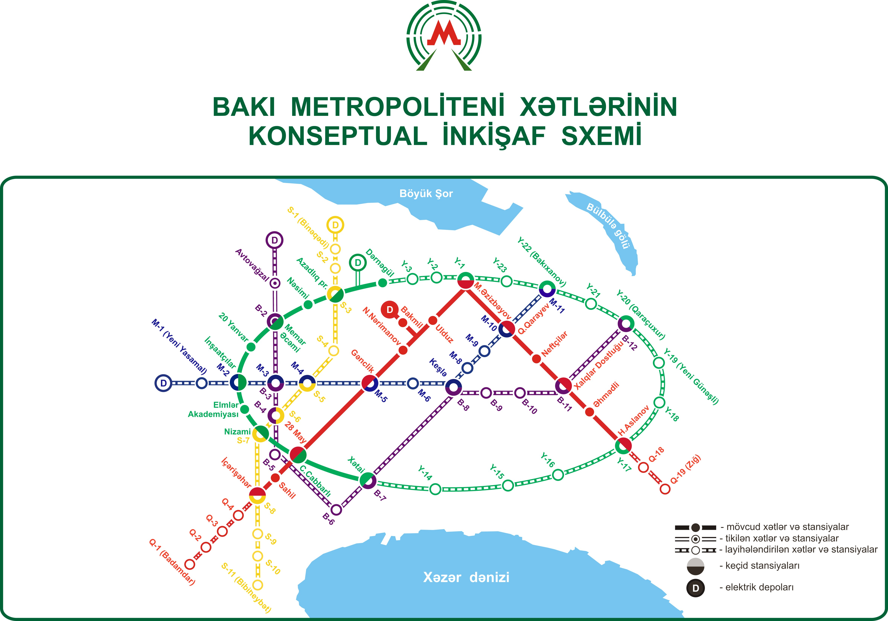
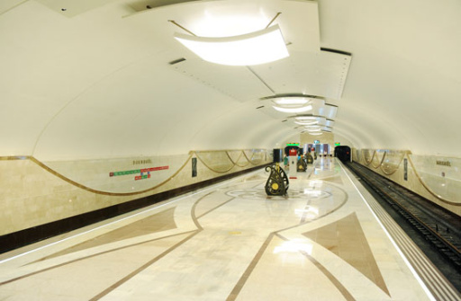
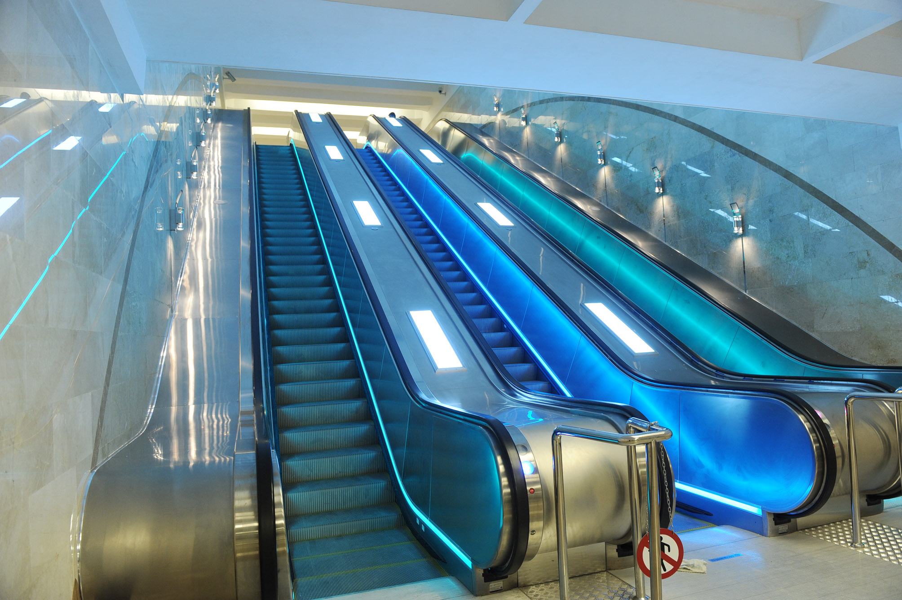

The provided information gives a comprehensive overview of the Baku Metro system, highlighting its history, infrastructure, development plans, and efforts toward modernization and safety. Here are some key points:
History and Infrastructure:
Baku Metro celebrated its 45th anniversary in 2012, having started operations in 1967.
The metro system currently consists of two lines with 23 stations, covering 34.56 km of tracks.
Notable features include deep stations, a minimum headway of 120 seconds, and a unique design reflecting the country's culture and architectural traditions.
Development Plans:

The long-term development plan for Baku Metro aims to expand the network to five lines, with a total of 76 stations and 119 km of tracks.
The plan involves the construction of new stations and the replacement of 5-car trains with 7-car trains, extending station lengths to 140 meters.
Renovation and Modernization:
Some deep stations, such as Koroğlu and İçərişəhər, have undergone renovations, featuring modern amenities and improved infrastructure.
The metro system has introduced new technologies and safety measures, including CCTV cameras, turnstiles with chip card readers, and automated counting of passengers.
Rolling Stock Renewal:

A program for the renewal of metro rolling stock began in 2002, resulting in the acquisition of 166 new train cars to meet the growing passenger demand.
Modernization efforts include the installation of automatic speed control systems and the use of advanced inspection tools for maintenance.
Safety and Security Measures:
The metro system has implemented various safety measures, including over 3,000 CCTV cameras, internet-based communication between departments, and modern turnstiles.
The introduction of new technologies has improved performance indicators and contributed to the system's profitability.
Infrastructure Maintenance:
Baku Metro addresses challenges such as corrosion of escalator shafts by replacing corroded parts with lighter materials.
Regular maintenance includes fortifying tunnels with concrete and insulation materials to prevent leaks.
Training and Social Conditions:
Baku Metro has established a technical room with a train simulator for training metro drivers, particularly for emergency situations.
Social conditions for metro workers have been improved, including free meals for those in harmful working conditions and support for trips to health centers.
International Recognition:
Baku Metro is a member of international associations, including the International Metro Association and the International Union of Public Transport (UITP).
The metro has received international recognition and awards for its quality and entrepreneurship in the transport sector.

Source: International Metro Association